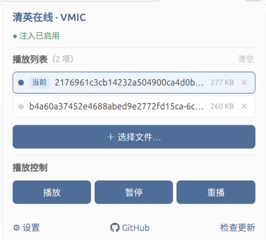

清英在线 · 虚拟麦克风
Chrome / Edge 扩展 · 纯本地运行 · MIT 开源
让网页录音 拿到你的音频文件
VMIC 把网页里的麦克风输入替换成本地音频：导入 文件、点开始录音，剩下的交给插件。所有音频都留 在你的浏览器里，不会上传到任何服务器。

最新版本 v1.2.8 需要 Chromium 111+ 适配 *.tsinghuaelt.com
围绕「网页录音」这一件事做的几个小功能。